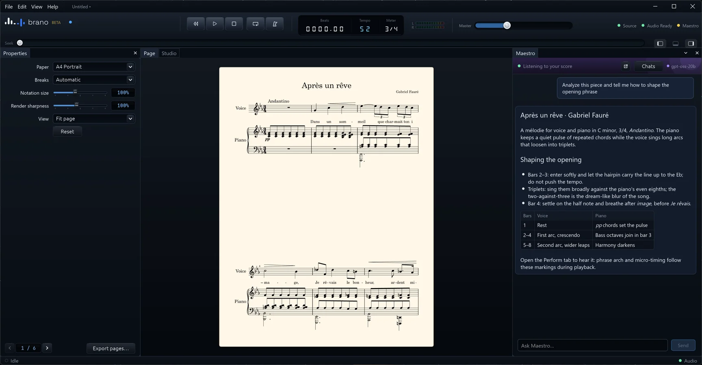

Studio
Notation and DAW lanes in one view.
Every part is an engraved lane with its own instrument, channel, mute, solo and freeze. The mixer, transport and playhead follow the same score you are reading.
Play with the bundled General MIDI sounds or host your own VST3 instruments and effects. Each plug-in runs in its own crash-contained process, so a misbehaving instrument cannot take your session down.

Maestro
An assistant that reads the score with you.
Maestro can analyse a piece, check voice leading or suggest changes directly in the notation. Every change it applies can be rolled back.
It is off by default and works with an AI provider you configure, or with a local model so nothing leaves your computer.

Perform
Playback that phrases.
Dynamics, accents, articulation, pedal, phrase arch, ritardando, micro-timing and swing are derived from the notation itself. Choose a style, set how much expression you want and listen.

Source
ABC is the single source of truth.
Edit plain text and watch the engraved score update. Diagnostics point at the exact line, history lets you step back, and MusicXML import and export keep you connected to other notation programs.

Page
Engraving ready for the stand.
Lay the score out on paper, tune notation size and breaks, and export PDF, SVG, PNG or TIFF. The music leaves as MusicXML, MIDI or ABC; the mix as WAV or FLAC, whole or as stems.

Built to stay out of your way
No account, no cloud
Brano stores nothing in the cloud and has no analytics or telemetry.
One file per session
Sessions are single .brn files you keep wherever you like. .abc files open directly.
Crash-contained plug-ins
VST3 instruments and effects run isolated from the app and from each other.
Freeze and export
Freeze parts to audio and export WAV or FLAC mixes or stems.